Some photos taken before, during, and after the Graveside service for Congressman Leonard Boswell and wife Dody on Saturday, August 25, 2018. U.S. Flags were set up at Rose Hill by the Lamoni Lions Club. Full Military Honors were rendered by the Iowa National Guard. Blackhawk Helicoptors flew over to honor Boswell's service in Vietnam as a helicopter pilot. A flyover in Leonard Boswell's plane was done by Jordan Omstead, who grew up in Lamoni and is a City Councilman, Airport Manager, and an Air Force veteran. His admission into the Air Force Academy was made possible by a recommendation by family friend and Congressman Boswell. See also posted photos by the Iowa National Guard and media photographers by following the links below:
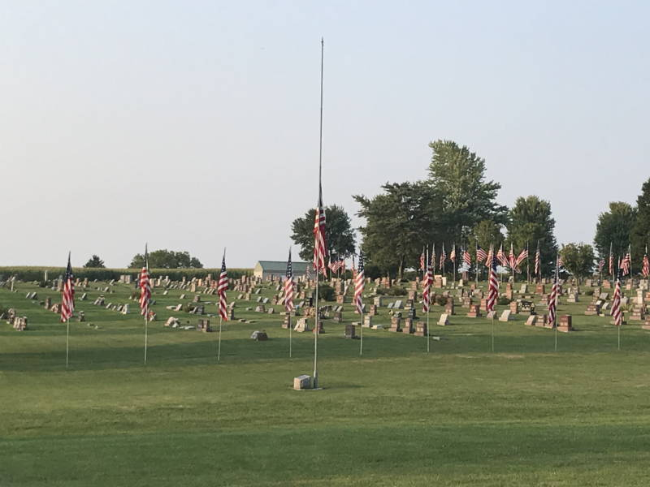
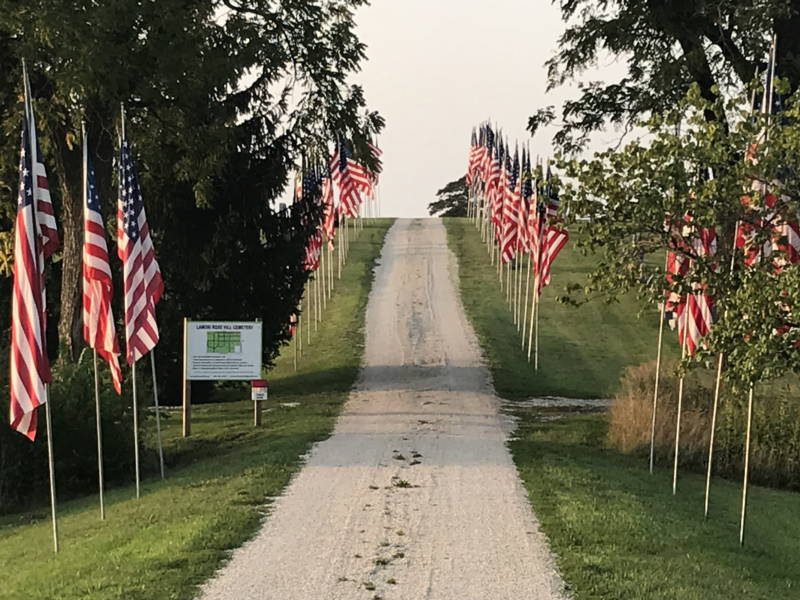
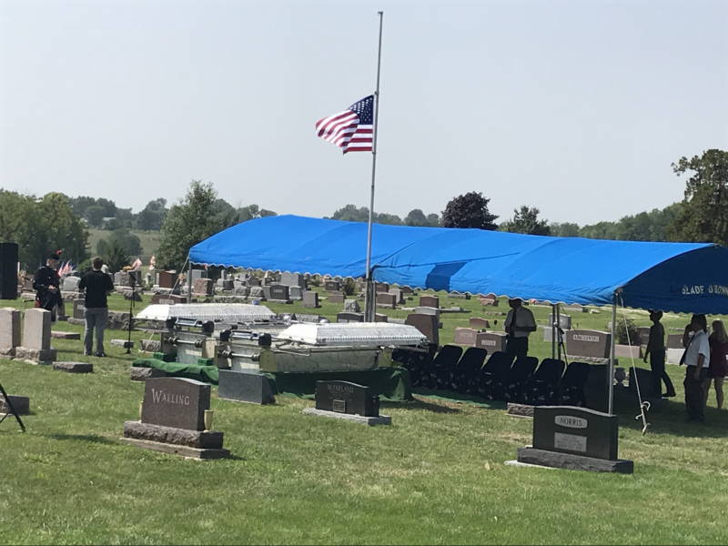
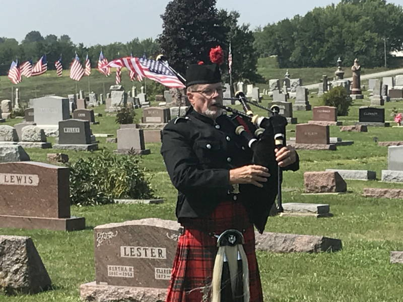
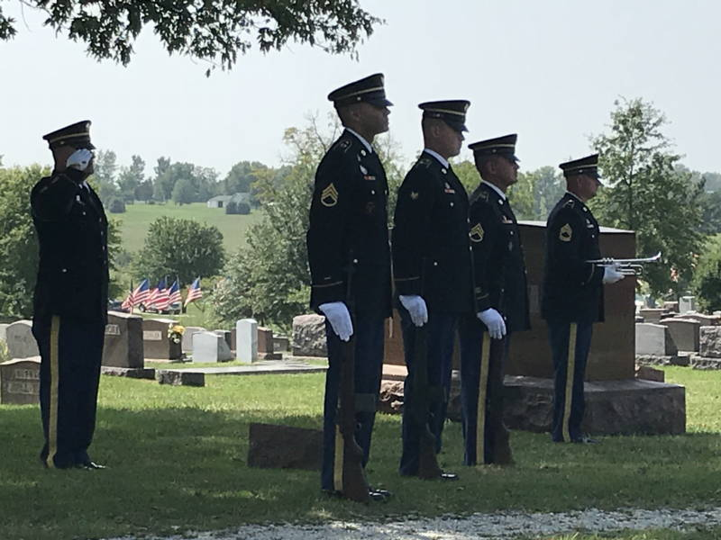
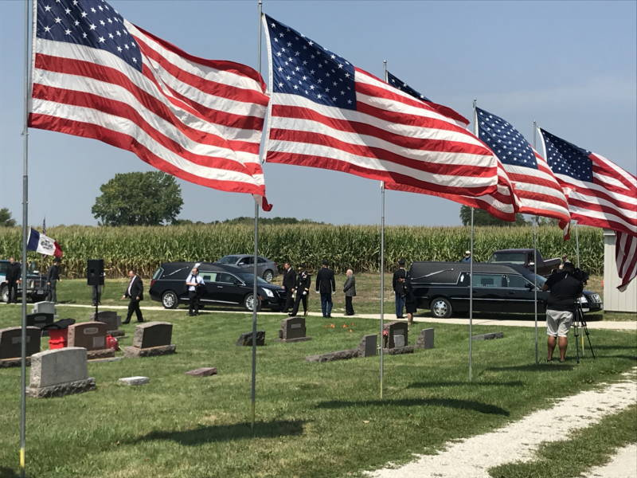
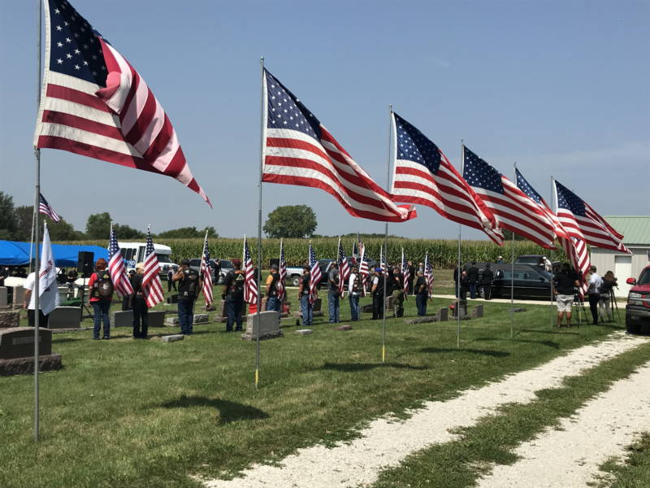
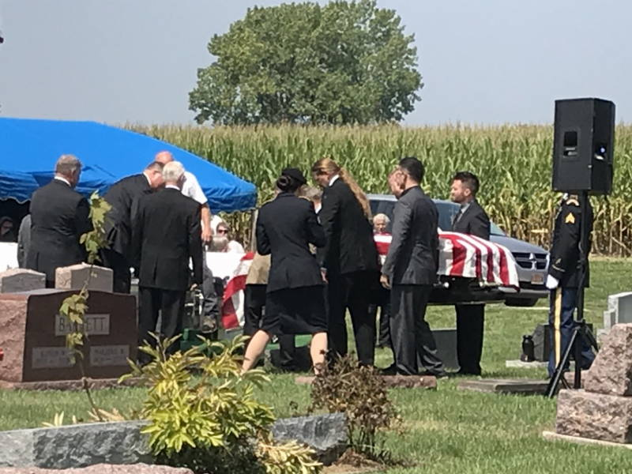
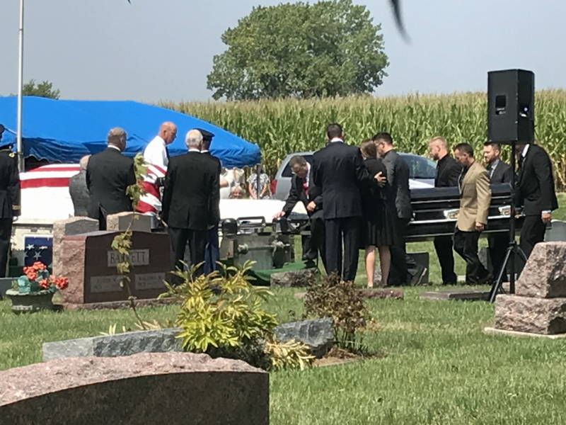
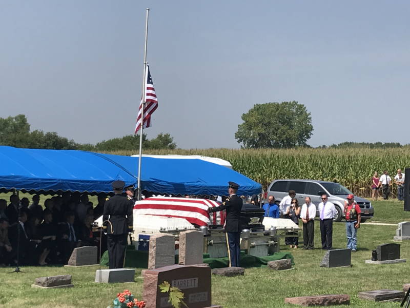
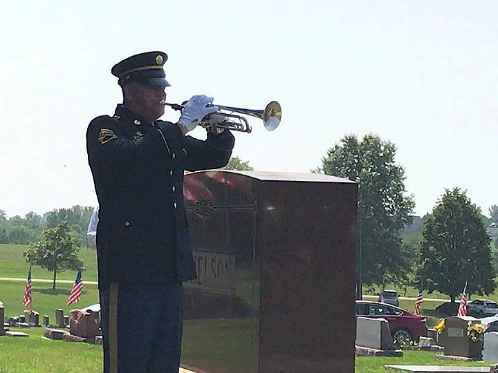
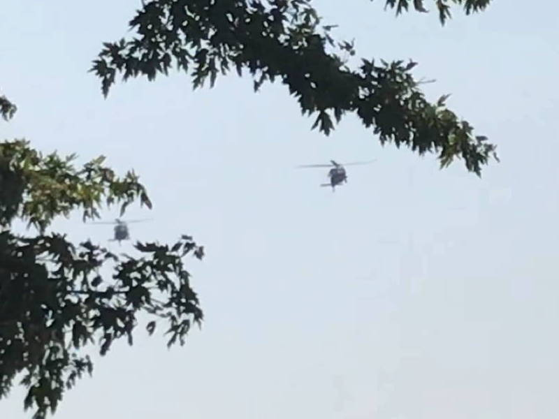
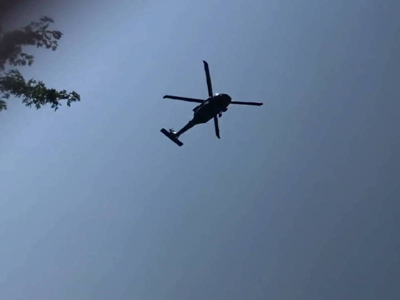
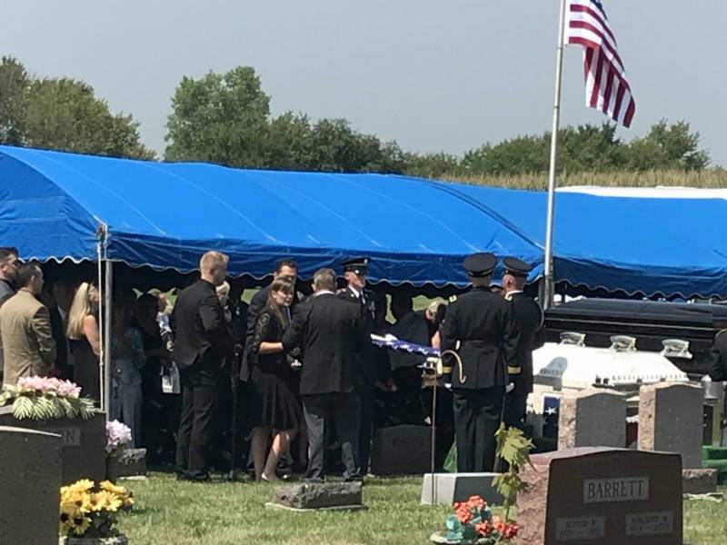
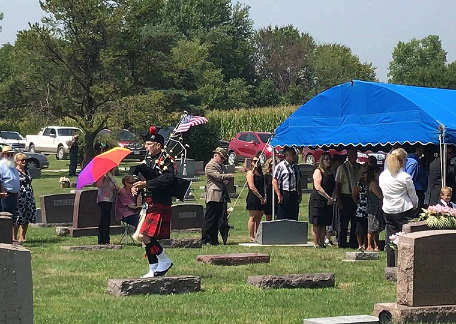
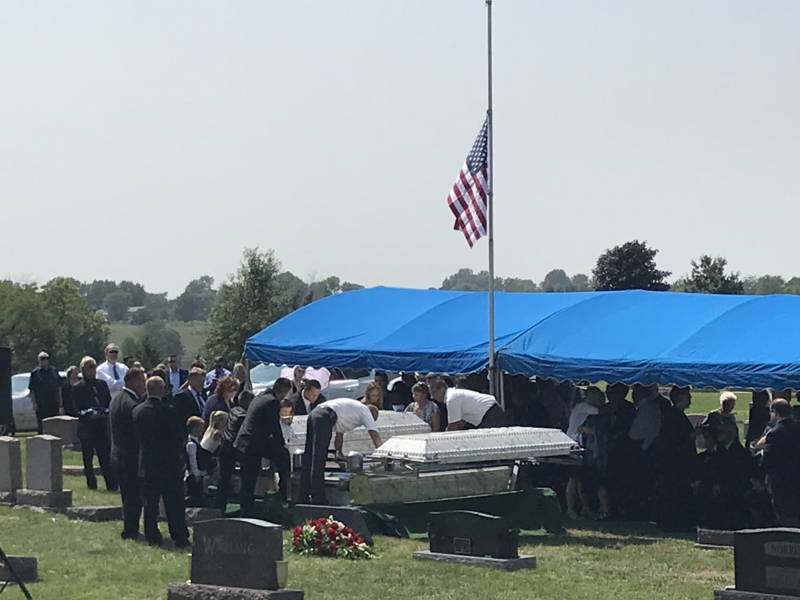
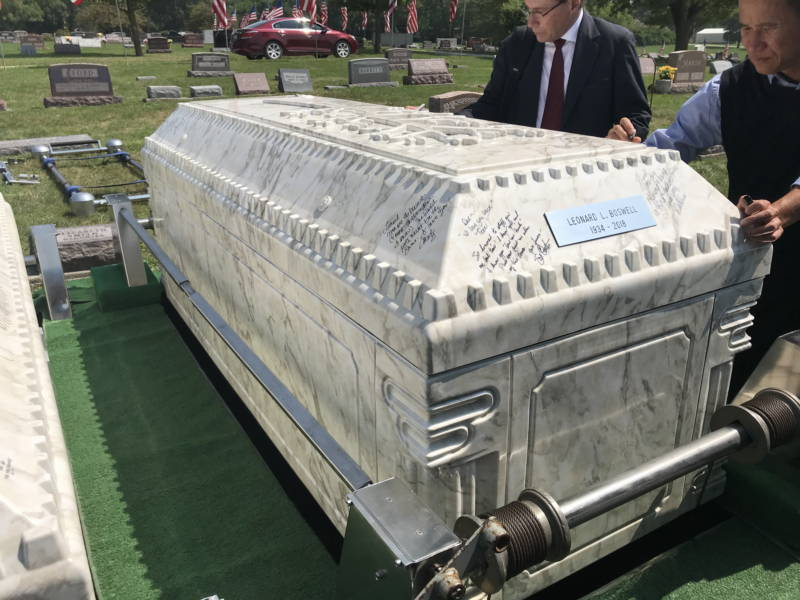
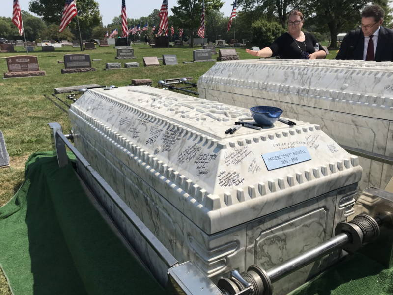
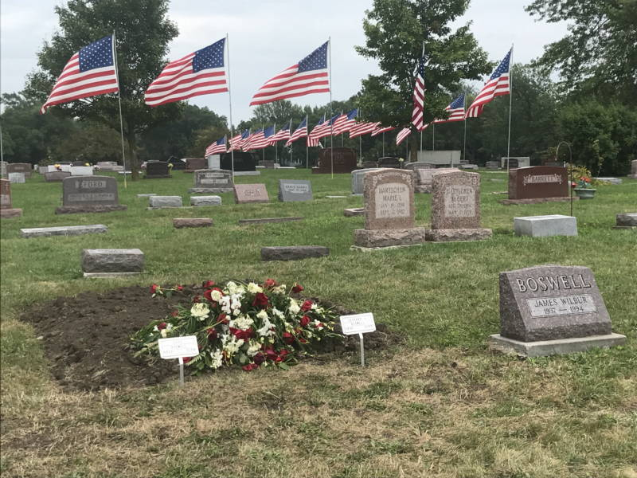